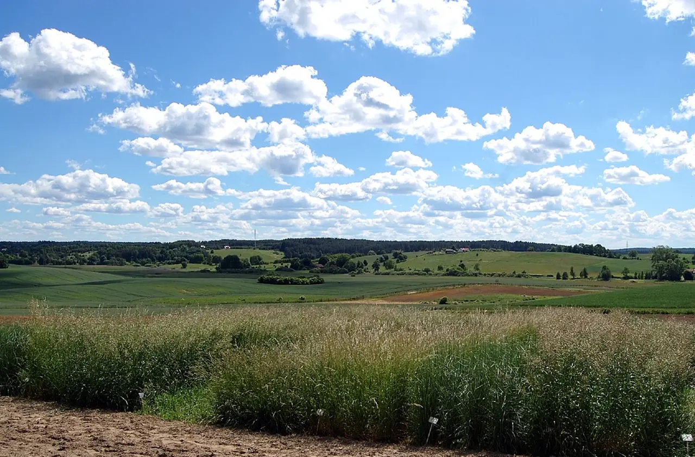
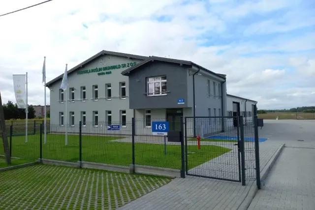

Odmiany traw i roślin bobowatych prosto z hodowli
Hodowla twórcza i zachowawcza traw, bobowatych drobnonasiennych i roślin energetycznych. Z naszych poletek odmiany trafiają do reprodukcji nasiennej u Udziałowców Spółki i krajowych firm nasiennych.
89 512 03 27
Mielno 163, gmina Grunwald


Mielno 163 - siedziba od 2021 r.Hodowla w Grupie IHAR
Hodowlą traw i bobowatych zajmujemy się od 2005 roku, najpierw jako Hodowla Roślin Bartążek pod Olsztynem, a od 2018 roku pod nazwą Hodowla Roślin Grunwald. Po żniwach 2021 roku cała działalność przeniosła się do nowej siedziby w Mielnie.
Hodowla twórcza
Nowe odmiany traw gazonowych i pastewnych, bobowatych drobnonasiennych oraz roślin energetycznych.
Hodowla zachowawcza
Utrzymanie cech zarejestrowanych odmian - od życic i kostrzew po koniczyny, lucernę i facelię.
Materiał siewny
Materiał kategorii Elitarny na kontraktację, czyli reprodukcję nasienną prowadzoną przez Udziałowców i firmy nasienne.
Lista odmian 2026
Każda odmiana jak tabliczka na poletku: gatunek, nazwa, wczesność i przeznaczenie. Opisy przetłumaczone z naszej listy Variety List 2026.
Trawy gazonowe
na trawniki, boiska i tereny zieleni - 15 odm.
- Życica trwałaBokser2n · wczesnatrawniki, boiska, tereny zielenirejestracja: PL, DE
- Życica trwałaAut2n · późnatrawniki, boiska; znosi półcieńrejestracja: PL
- Życica trwałaBerkut2n · średniopóźnatrawniki, boiska, tereny zielenirejestracja: PL
- Życica trwałaStadion2n · średniopóźnatrawniki, boiska, tereny zielenirejestracja: PL
- Życica trwałaGabi2n · wczesnatrawniki, boiska, tereny zielenirejestracja: CZ
- Życica trwałaGalante2n · wczesna, trwałatrawniki, ogrody, parkirejestracja: PL
- Życica trwałaGraffiti2n · średniopóźna, trwałatrawniki, ogrody, parkirejestracja: PL
- Życica trwałaGrilla2n · wczesna, trwałatrawniki, ogrody, parkirejestracja: PL
- Kostrzewa trzcinowaEscalante6n · średniowczesna, trwałatrawniki, ogrody, parkirejestracja: PL
- Kostrzewa czerwonaRapsodia6n · średnia, trwałatrawniki, boiska, ogrodyrejestracja: PL
- Kostrzewa czerwonaGross8n · wczesna, rozłogowatrawniki, ogrody, trudne stanowiskarejestracja: PL
- Kostrzewa czerwonaGrobla8n · średniowczesna, rozłogowatrawniki, ogrody, trudne stanowiskarejestracja: PL
- Kostrzewa czerwonaDark8n · średnia, rozłogowatrawniki, boiska, trudne stanowiskarejestracja: PL
- Wiechlina łąkowaSójkapóźna, trwałatrawniki, boiska, ogrodyrejestracja: PL
- Życica westerwoldzkaGlosa2n · wczesnatrawa osłonowa do mieszanek trawnikowychrejestracja: PL
Trawy pastewne
na łąki, pastwiska i użytki przemienne - 15 odm.
- Życica trwałaBajka2n · wczesnałąki, pastwiska, użytki przemiennerejestracja: PL
- Życica trwałaRela2n · średniopóźnałąki, pastwiska, użytki przemiennerejestracja: PL
- Życica trwałaBrawa4n · późnałąki, pastwiska; znosi wypasrejestracja: PL
- Życica trwałaBaronka4n · średniopóźnałąki, pastwiska; znosi wypasrejestracja: PL
- Życica westerwoldzkaKoga4n · późnaużytki przemienne, międzyplonyrejestracja: PL
- Życica westerwoldzkaTelga4n · późnaużytki przemienne, międzyplonyrejestracja: PL
- Życica mieszańcowaGala4n · wczesnaużytki przemienne, międzyplonyrejestracja: PL
- Życica mieszańcowaMega4n · średniopóźnaużytki przemienne, międzyplonyrejestracja: PL
- Życica wielokwiatowaBakus4n · wczesnaużytki przemienne, międzyplonyrejestracja: PL
- Kupkówka pospolitaBerta4n · średniopóźna, trwałałąki, pastwiska, siew czysty i mieszankirejestracja: PL
- Kupkówka pospolitaBepro4n · bardzo wczesna, trwałałąki, pastwiska, siew czysty i mieszankirejestracja: PL
- Kostrzewa łąkowaPasja2n · średnia, trwałałąki, pastwiska, mieszanki, podsiewrejestracja: PL
- Tymotka łąkowaKarta6n · wczesna, trwałałąki, pastwiska, mieszanki z bobowatymirejestracja: PL
- Tymotka łąkowaKaba6n · bardzo wczesna, trwałałąki, pastwiska, mieszanki z bobowatymirejestracja: PL
- Kostrzewa trzcinowaRahela6n · średniowczesnałąki, pastwiska, mieszanki, pobocza drógrejestracja: PL
Bobowate drobnonasienne
koniczyny i lucerna - 3 odm.
- Koniczyna łąkowaRozeta2n · średnia, trwałasiew czysty, mieszanki z trawamirejestracja: PL
- Lucerna mieszańcowaRadius4n · średniowczesna, trwałasiew czysty, mieszanki, łąki i pastwiskarejestracja: PL
- Koniczyna białaRomena4n · późna, trwałasiew czysty, mieszanki z trawamirejestracja: PL
Inne rośliny
miododajne i energetyczne - 3 odm.
- Facelia błękitnaStala2n · jednorocznaroślina miododajna, międzyplon, zielonkarejestracja: PL
- GrykaPanda2n · jednorocznamiododajna, międzyplon, nawóz zielonyrejestracja: PL
- Perz wydłużonyBamar10n · bardzo trwałaenergetyka, biogaz, pobocza; słoma, peletrejestracja: PL
Gdzie kupić nasiona naszych odmian
Nie prowadzimy bezpośredniej sprzedaży materiału kategorii Elitarny dla producentów rolnych. Nasiona naszych odmian kupią Państwo u Udziałowców Spółki i w krajowych firmach nasiennych.
Firmy nasienne zainteresowane reprodukcją naszych odmian zapraszamy do kontaktu w sprawie kontraktacji.
Zapytaj o kontraktacjęZ pola hodowlanego
Poletka, plantacje nasienne i żniwa - zdjęcia z naszej galerii.


Dla plantatorów
Materiały, które dziś leżą w zakładkach "Warto przeczytać" i "Środki ochrony roślin" - na nowej stronie w jednym miejscu.
- Co warto wiedzieć, decydując się na uprawę traw na nasiona?
- Fazy rozwojowe traw
- Technologia i ekonomika produkcji traw na nasiona
- Ochrona chemiczna traw nasiennychdr inż. Adam Paradowski
- Odchwaszczanie użytków zielonychdr inż. Adam Paradowski
- Recepta na dobry trawnik
Kontakt
Pytania o odmiany, kontraktację i współpracę hodowlaną.
- Adres
- Mielno 163, 14-107 Mielno
gmina Grunwald, powiat Ostróda - Spółka
- Hodowla Roślin Grunwald Sp. z o.o. Grupa IHAR
- NIP
- 739-35-05-455
- KRS
- 0000240512